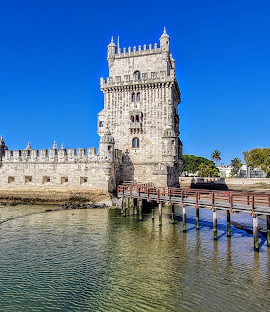

Dia 1
Vaig arribar a Lisboa i vaig passejar pel barri d'Alfama. Em va encantar la música fado als carrers.

Dia 2
Vaig visitar la Torre de Belém i el Monestir dels Jerònims, dos llocs espectaculars amb molta història.
Dia 3
Vaig provar els famosos pastéis de nata i vaig agafar el tramvia 28 per veure tota la ciutat.